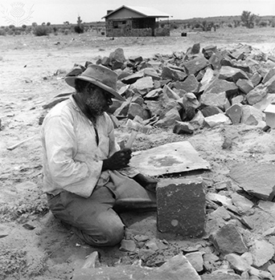

3 Ideational meaning – talking about what’s going on¶
In this section we focus on the language used to convey the speaker or writer’s perspective on and experience of ‘what is happening’: what is known in SFL as ‘ideational meaning’. Whenever we talk about events, we represent them in a certain way. There are almost always other choices we could make in our language which would result in a different representation of events.
Figure 7 Taking a photograph, or posing for one?
Take, for example, the event represented in this image. This could be expressed verbally in different ways, for example:
A young woman is photographing her brother.
A young man is posing for a photograph.
Here we can see a difference in __lexical __choices (brother as against young man for example) and also a difference in the way the grammatical pattern represents the experience. In Example 1 we have a process in which two participants are involved: one that does the action (the agent – the young woman) and one that is affected by the action (her brother). In the clause in Example 2 we have a different process involving only one participant: the agent (A young man). The man is represented in Example 1 as the participant who is ‘acted on’ and in Example 2 as the agent.
Another contrast between the two representations concerns the action itself. In Example 1, is photographing has the central place grammatically as the verb. In Example 2, is posing is the verb that has the central place and the action of photographing is merely implied in the extra detail (for a photograph). The point is not that one version is better or truer than another, but that the two versions create slightly different meanings: they make subtly different interpretations of the same ‘reality’. Every time we say or write something that makes sense we are transforming experience into a particular pattern, and every time we do this we are making meaning – but not the only possible meaning. Just as our choice of words contributes to meaning, so does our choice of how we pattern those words. This is fundamental to understanding why our use of both vocabulary and grammar together (known as the lexicogrammatical system) is so important and also why a functional approach helps to focus on meaning.
3.1 Representing events¶
In the following activity you will explore a further illustration of the ideational metafunction: how different lexicogrammatical choices represent events in different ways.
Activity 7: ‘The Killing Time’¶
Timing: 30 minutes
Question¶

Figure 8 A Warlpiri resettlement scheme
Read the following short text, which was part of an exhibition at the Australia Museum in Sydney. The text is about the arrival of white colonial settlers in Australia and its devastating consequences for the indigenous population. Make notes in the first text box about how the passage represents the Warlpiri people and the events which occurred. When Europeans arrived, the way of life of the Warlpiri people was changed.
The best land was taken over by Europeans for cattle and sheep and the Aborigines had only the desert land to live in.
In 1928, a severe drought forced Warlpiri people from the desert. Some tried to get food and water on the better land and fights broke out. A large group of Warlpiri people were killed by Europeans. The Warlpiri refer to this as the Killing Time.
Those people who remained became dependent upon European society and were resettled at government controlled townships like Warrabri and Yuendumu. There, many people were alienated from their own country, their dreaming and their spiritual guardians.
Reference: (Australian Museum text, cited in Ferguson et al., 1995, p. 7)
Question¶
Now look at the passage for a second time, paying particular attention to the __verbs __used to represent past events or processes. These have been highlighted using italics. Make a note of whether each verb form is active or passive, who is the agent and who is ‘acted on’ by the action represented by the verb in each case. In the second text box, make a note of whether this closer look has altered your interpretation of the passage. When Europeans arrived, the way of life of the Warlpiri people was changed.
The best land was taken over by Europeans for cattle and sheep and the Aborigines* had* only the desert land to live in.
In 1928, a severe drought forced Warlpiri people from the desert. Some tried to get food and water on the better land and fights broke out. A large group of Warlpiri people were killed by Europeans. The Warlpiri refer to this as the Killing Time.
Those people who remained became dependent upon European society and were resettled at government controlled townships like Warrabri and Yuendumu. There, many people were alienated from their own country, their dreaming and their spiritual guardians.
Reference: (Australian Museum text, cited in Ferguson et al., 1995, p. 7)
Question¶
Discussion¶
This passage was used by some Australian linguists and colleagues (Ferguson et al., 1995, p. 7) to explain to museum educators how their lexicogrammatical choices shaped the way they represented Australian history and culture to museum visitors.
They comment that the first impression given is that this is quite a progressive take on events. It acknowledges past violence by European settlers and appears to represent the Warlpiri point of view. There is no attempt to disguise who did the killing. On the other hand, closer analysis of the verb groups used in the passage provides a different perspective. The Warlpiri are often referred to as being affected by events rather than as agents (e.g. a severe drought forced [them] from the desert). Where the actions of the Warlpiri are referred to using active verb forms, the choices made convey a sense that their agency is limited (e.g. they tried to get food; [they] became dependent). Also, the most violent act referred to is written in the passive, lessening its impact: A large group … were killed by Europeans). The authors argue that the text unwittingly perpetuates a view of Australian history which subtly promotes cultural stereotypes and downplays the enormity of colonial violence. In doing so, they demonstrate that a detailed analysis helps to explain how ‘a particular orientation is constructed for readers’ (p. 7), even in a seemingly objective text. They show museum curators that they need to be highly conscious of their language choices in order to avoid giving unintentional messages.
Whether or not you agree with this particular interpretation or not is less important here than understanding how such choices matter when it comes to representing how the world is and what happens in it.